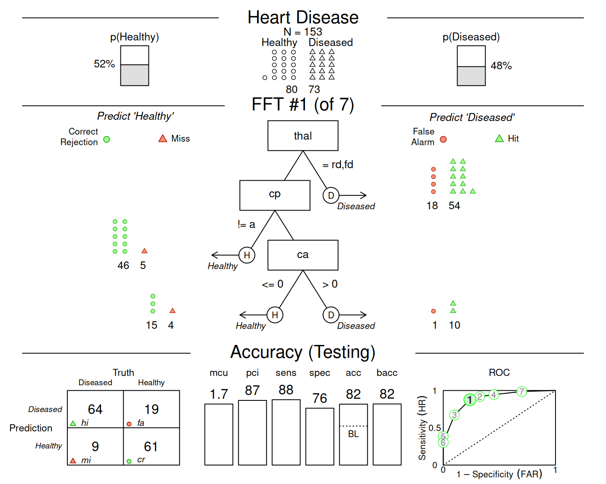
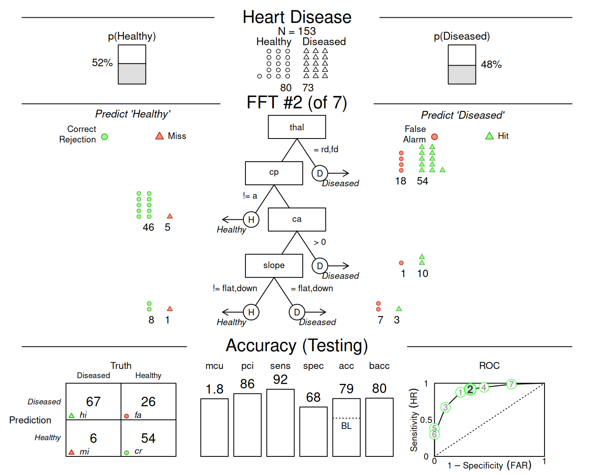
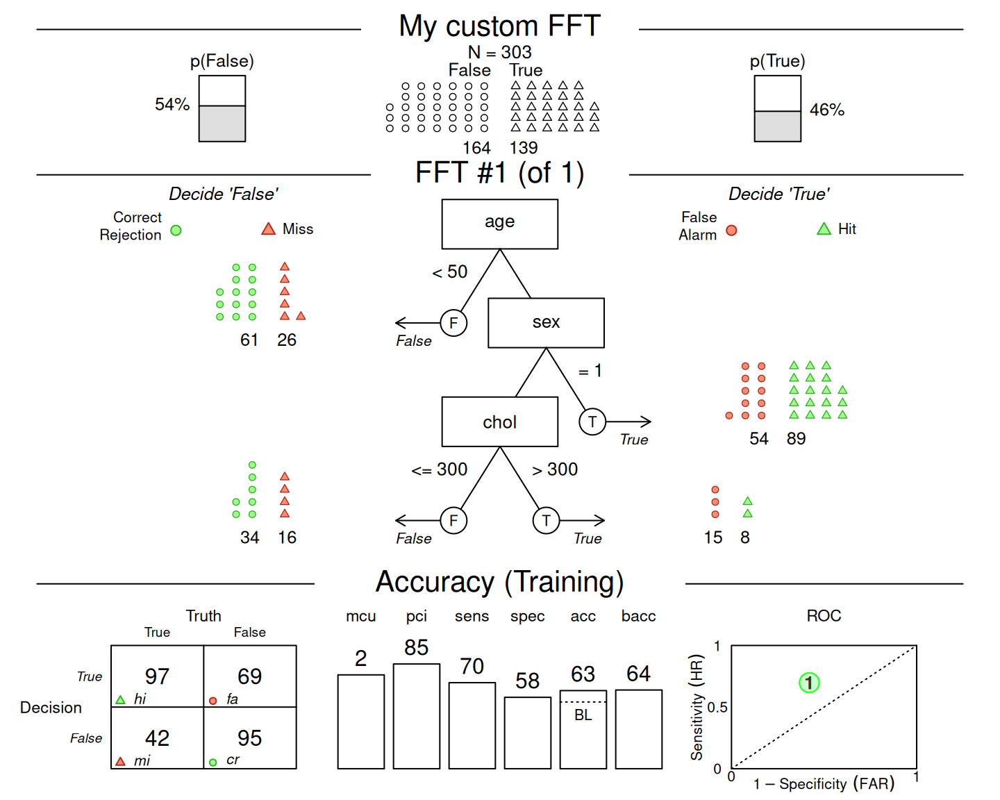
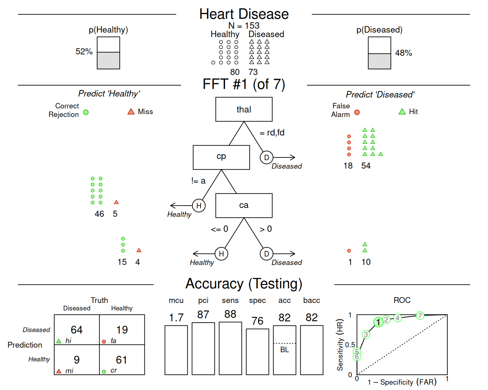
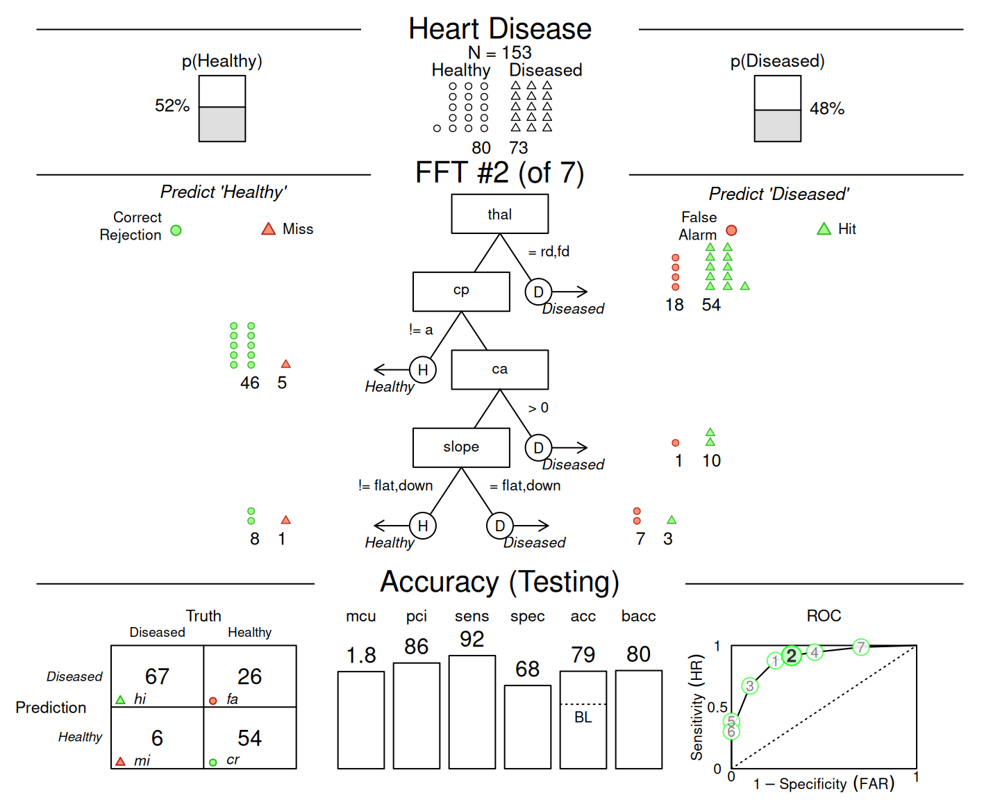
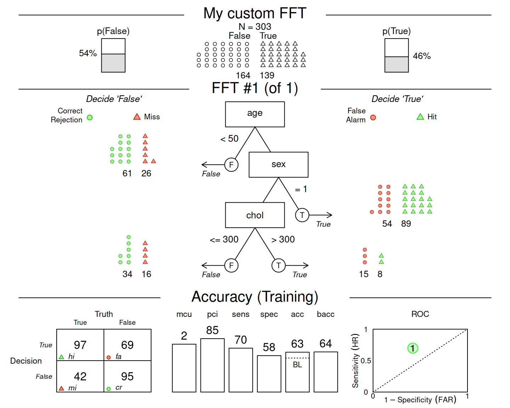

FFTrees is the workhorse function of the FFTrees package for creating fast-and-frugal trees (FFTs).
FFTs are decision algorithms for solving binary classification tasks, i.e., they predict the values of a binary criterion variable based on 1 or multiple predictor variables (cues).
Using FFTrees on data usually generates a range of FFTs and corresponding summary statistics (as an FFTrees object)
that can then be printed, plotted, and examined further.
The criterion and predictor variables are specified in formula notation.
Based on the settings of data and data.test, FFTs are trained on a (required) training dataset
(given the set of current goal values) and evaluated on (or predict) an (optional) test dataset.
If an existing FFTrees object object or tree.definitions are provided as inputs,
no new FFTs are created.
When both arguments are provided, tree.definitions take priority over the FFTs in an existing object.
Specifically,
If
tree.definitionsare provided, these are assigned to the FFTs ofx.If no
tree.definitionsare provided, but an existingFFTreesobjectobjectis provided, the trees fromobjectare assigned to the FFTs ofx.
Usage
FFTrees(
formula = NULL,
data = NULL,
data.test = NULL,
algorithm = "ifan",
train.p = 1,
goal = NULL,
goal.chase = NULL,
goal.threshold = NULL,
max.levels = NULL,
numthresh.method = "o",
numthresh.n = 10,
repeat.cues = TRUE,
stopping.rule = "exemplars",
stopping.par = 0.1,
sens.w = 0.5,
cost.outcomes = NULL,
cost.cues = NULL,
main = NULL,
decision.labels = c("False", "True"),
my.goal = NULL,
my.goal.fun = NULL,
my.tree = NULL,
object = NULL,
tree.definitions = NULL,
quiet = list(ini = TRUE, fin = FALSE, mis = FALSE, set = TRUE),
comp = NULL,
force = NULL,
rank.method = NULL,
rounding = NULL,
store.data = NULL,
verbose = NULL,
do.comp = NULL,
do.cart = NULL,
do.lr = NULL,
do.rf = NULL,
do.svm = NULL
)Arguments
- formula
A formula. A
formulaspecifying a binary criterion variable (as logical) as a function of 1 or more predictor variables (cues).- data
A data frame. A dataset used for training (fitting) FFTs and alternative algorithms.
datamust contain the binary criterion variable specified informulaand potential predictors (which can be categorical or numeric variables).- data.test
A data frame. An optional dataset used for model testing (prediction) with the same structure as data.
- algorithm
A character string. The algorithm used to create FFTs. Can be
'ifan','dfan'.- train.p
numeric. What percentage of the data to use for training when
data.testis not specified? For example,train.p = .50will randomly splitdatainto a 50% training set and a 50% test set. Default:train.p = 1(i.e., using all data for training).- goal
A character string indicating the statistic to maximize when selecting trees:
"acc"= overall accuracy,"bacc"= balanced accuracy,"wacc"= weighted accuracy,"dprime"= discriminability,"cost"= costs (based oncost.outcomesandcost.cues).- goal.chase
A character string indicating the statistic to maximize when constructing trees:
"acc"= overall accuracy,"bacc"= balanced accuracy,"wacc"= weighted accuracy,"dprime"= discriminability,"cost"= costs (based oncost.outcomesandcost.cues).- goal.threshold
A character string indicating the criterion to maximize when optimizing cue thresholds:
"acc"= overall accuracy,"bacc"= balanced accuracy,"wacc"= weighted accuracy,"dprime"= discriminability,"cost"= costs (based only oncost.outcomes, ascost.cuesare constant per cue). All default goals are set infftrees_create.- max.levels
integer. The maximum number of nodes (or levels) considered for an FFT. As all combinations of possible exit structures are considered, larger values of
max.levelswill create larger sets of FFTs.- numthresh.method
How should thresholds for numeric cues be determined (as character)?
"o"will optimize thresholds (forgoal.threshold), while"m"will use the median. Default:numthresh.method = "o".- numthresh.n
The number of numeric thresholds to try (as integer). Default:
numthresh.n = 10.- repeat.cues
May cues occur multiple times within a tree (as logical)? Default:
repeat.cues = TRUE.- stopping.rule
A character string indicating the method to stop growing trees. Available options are:
"exemplars": A tree grows until only a small proportion of unclassified exemplars remain;"levels": A tree grows until a certain level is reached;"statdelta": A tree grows until the change in the criterion statisticgoal.chaseexceeds some threshold level. (This setting is currently experimental and includes the first level beyond threshold. As tree statistics can be non-monotonic, this option may yield inconsistent results.)
All stopping methods use
stopping.parto set a numeric threshold value. Default:stopping.rule = "exemplars".- stopping.par
numeric. A numeric parameter indicating the criterion value for the current
stopping.rule. For stopping.rule"levels", this is the number of desired levels (as an integer). For stopping rule"exemplars", this is the smallest proportion of exemplars allowed in the last level. For stopping.rule"statdelta", this is the minimum required change (in thegoal.chasevalue) to include a level. Default:stopping.par = .10.- sens.w
A numeric value from
0to1indicating how to weight sensitivity relative to specificity when optimizing weighted accuracy (e.g.,goal = 'wacc'). Default:sens.w = .50(i.e.,wacccorresponds tobacc).- cost.outcomes
A list of length 4 specifying the cost value for one of the 4 possible classification outcomes. The list elements must be named
'hi','fa','mi', and'cr'(for specifying the costs of a hit, false alarm, miss, and correct rejection, respectively) and provide a numeric cost value. E.g.;cost.outcomes = listc("hi" = 0, "fa" = 10, "mi" = 20, "cr" = 0)imposes false alarm and miss costs of10and20units, respectively, while correct decisions have no costs.- cost.cues
A list containing the cost of each cue (in some common unit). Each list element must have a name corresponding to a cue (i.e., a variable in
data), and should be a single (positive numeric) value. Cues indatathat are not present incost.cuesare assumed to have no costs (i.e., a cost value of0).- main
string. An optional label for the dataset. Passed on to other functions, like
plot.FFTrees, andprint.FFTrees.- decision.labels
A vector of strings of length 2 for the text labels for negative and positive decision/prediction outcomes (i.e., left vs. right, noise vs. signal, 0 vs. 1, respectively, as character). E.g.;
decision.labels = c("Healthy", "Diseased").- my.goal
The name of an optimization measure defined by
my.goal.fun(as a character string). Example:my.goal = "my_acc"(seemy.goal.funfor corresponding function). Default:my.goal = NULL.- my.goal.fun
The definition of an outcome measure to optimize, defined as a function of the frequency counts of the 4 basic classification outcomes
hi, fa, mi, cr(i.e., an R function with 4 argumentshi, fa, mi, cr). Example:my.goal.fun = function(hi, fa, mi, cr){(hi + cr)/(hi + fa + mi + cr)}(i.e., accuracy). Default:my.goal.fun = NULL.- my.tree
A verbal description of an FFT, i.e., an "FFT in words" (as character string). For example,
my.tree = "If age > 20, predict TRUE. If sex = {m}, predict FALSE. Otherwise, predict TRUE.".- object
An optional existing
FFTreesobject. When specified, no new FFTs are fitted, but existing trees are applied todataanddata.test. Whenformula,dataordata.testare not specified, the current values ofobjectare used.- tree.definitions
An optional
data.frameof hard-coded FFT definitions (in the format ofx$trees$definitionsof anFFTreesobjectx). If specified, no new FFTs are being fitted (i.e.,algorithmand functions for evaluating cues and creating FFTs are skipped). Instead, the tree definitions provided are used to re-evaluate the currentFFTreesobject on current data.- quiet
A list of 4 logical arguments: Should detailed progress reports be suppressed? Setting list elements to
FALSEis helpful when diagnosing errors. Default:quiet = list(ini = TRUE, fin = FALSE, mis = FALSE, set = TRUE), for initial vs. final steps, missing cases, and parameter settings, respectively. Providing a single logical value sets all elements toTRUEorFALSE.- comp, do.comp, do.lr, do.cart, do.svm, do.rf, force, rank.method, rounding, store.data, verbose
Deprecated arguments (unused or replaced, to be retired in future releases).
Value
An FFTrees object with the following elements:
- criterion_name
The name of the binary criterion variable (as character).
- cue_names
The names of all potential predictor variables (cues) in the data (as character).
- formula
The
formulaspecified when creating the FFTs.- trees
A list of FFTs created, with further details contained in
n,best,definitions,inwords,stats,level_stats, anddecisions.- data
The original training and test data (if available).
- params
A list of defined control parameters (e.g.;
algorithm,goal,sens.w, as well as various thresholds, stopping rule, and cost parameters).- cues
A list of cue information, with further details contained in
thresholdsandstats.
See also
print.FFTrees for printing FFTs;
plot.FFTrees for plotting FFTs;
summary.FFTrees for summarizing FFTs;
inwords for obtaining a verbal description of FFTs;
showcues for plotting cue accuracies.
Examples
# 1. Create fast-and-frugal trees (FFTs) for heart disease:
heart.fft <- FFTrees(formula = diagnosis ~ .,
data = heart.train,
data.test = heart.test,
main = "Heart Disease",
decision.labels = c("Healthy", "Diseased")
)
#> ✔ Created an FFTrees object.
#> Ranking 13 cues: ■■■■■■■■ 23% | ETA: 1s
#> Ranking 13 cues: ■■■■■■■■■■■■■■■■■■■■■■■■■■■■■■■ 100% | ETA: 0s
#>
#> ✔ Ranked 13 cues (optimizing 'bacc').
#> ✔ Created 7 FFTs with 'ifan' algorithm (chasing 'bacc').
#> ✔ Defined 7 FFTs.
#> ✔ Applied 7 FFTs to 'train' data.
#> ✔ Ranked 7 FFTs by 'train' data.
#> ✔ Applied 7 FFTs to 'test' data.
#> ✔ Expressed 7 FFTs in words.
# 2. Print a summary of the result:
heart.fft # same as:
#> Heart Disease
#> FFTrees
#> - Trees: 7 fast-and-frugal trees predicting diagnosis
#> - Cost of outcomes: hi = 0, fa = 1, mi = 1, cr = 0
#> - Cost of cues:
#> age sex cp trestbps chol fbs restecg thalach
#> 1 1 1 1 1 1 1 1
#> exang oldpeak slope ca thal
#> 1 1 1 1 1
#>
#> FFT #1: Definition
#> [1] If thal = {rd,fd}, decide Diseased.
#> [2] If cp != {a}, decide Healthy.
#> [3] If ca > 0, decide Diseased, otherwise, decide Healthy.
#>
#> FFT #1: Training Accuracy
#> Training data: N = 150, Pos (+) = 66 (44%)
#>
#> | | True + | True - | Totals:
#> |----------|--------|--------|
#> | Decide + | hi 54 | fa 18 | 72
#> | Decide - | mi 12 | cr 66 | 78
#> |----------|--------|--------|
#> Totals: 66 84 N = 150
#>
#> acc = 80.0% ppv = 75.0% npv = 84.6%
#> bacc = 80.2% sens = 81.8% spec = 78.6%
#>
#> FFT #1: Training Speed, Frugality, and Cost
#> mcu = 1.74, pci = 0.87
#> cost_dec = 0.200, cost_cue = 1.740, cost = 1.940
#>
# print(heart.fft, data = "train", tree = "best.train")
# 3. Plot an FFT applied to training data:
plot(heart.fft) # same as:
 # plot(heart.fft, what = "all", data = "train", tree = "best.train")
# 4. Apply FFT to (new) testing data:
plot(heart.fft, data = "test") # predict for Tree 1

plot(heart.fft, data = "test", tree = 2) # predict for Tree 2

# 5. Predict classes and probabilities for new data:
predict(heart.fft, newdata = heartdisease)
#> ✔ Applied 7 FFTs to 'test' data.
#> ✔ Generated predictions for tree 1.
#> [1] TRUE TRUE TRUE FALSE FALSE FALSE TRUE FALSE TRUE TRUE TRUE FALSE
#> [13] TRUE TRUE TRUE FALSE TRUE FALSE FALSE FALSE FALSE FALSE FALSE TRUE
#> [25] TRUE FALSE FALSE FALSE FALSE TRUE FALSE TRUE FALSE TRUE FALSE FALSE
#> [37] TRUE TRUE TRUE FALSE TRUE TRUE FALSE FALSE FALSE TRUE FALSE TRUE
#> [49] FALSE FALSE FALSE TRUE TRUE FALSE TRUE TRUE TRUE TRUE FALSE FALSE
#> [61] TRUE FALSE TRUE FALSE TRUE TRUE FALSE TRUE TRUE FALSE FALSE TRUE
#> [73] TRUE TRUE TRUE FALSE TRUE FALSE FALSE TRUE FALSE FALSE FALSE TRUE
#> [85] FALSE FALSE FALSE FALSE FALSE FALSE FALSE TRUE TRUE FALSE FALSE TRUE
#> [97] TRUE TRUE FALSE FALSE FALSE FALSE TRUE FALSE TRUE TRUE TRUE TRUE
#> [109] TRUE TRUE TRUE TRUE TRUE TRUE TRUE TRUE FALSE FALSE TRUE TRUE
#> [121] TRUE TRUE FALSE TRUE FALSE FALSE TRUE TRUE FALSE FALSE TRUE TRUE
#> [133] FALSE FALSE FALSE FALSE TRUE TRUE TRUE FALSE FALSE TRUE FALSE TRUE
#> [145] TRUE FALSE TRUE FALSE FALSE FALSE TRUE FALSE TRUE TRUE TRUE TRUE
#> [157] TRUE TRUE TRUE TRUE TRUE TRUE FALSE FALSE FALSE TRUE FALSE FALSE
#> [169] TRUE FALSE TRUE TRUE FALSE FALSE TRUE TRUE TRUE TRUE FALSE FALSE
#> [181] TRUE TRUE FALSE TRUE FALSE FALSE TRUE TRUE TRUE TRUE FALSE TRUE
#> [193] TRUE TRUE FALSE TRUE FALSE FALSE FALSE FALSE FALSE FALSE TRUE TRUE
#> [205] TRUE TRUE TRUE TRUE FALSE FALSE FALSE TRUE FALSE TRUE TRUE TRUE
#> [217] FALSE FALSE TRUE FALSE FALSE FALSE FALSE TRUE TRUE FALSE FALSE FALSE
#> [229] TRUE TRUE FALSE FALSE FALSE FALSE FALSE TRUE TRUE TRUE FALSE FALSE
#> [241] FALSE FALSE FALSE FALSE FALSE FALSE TRUE TRUE TRUE FALSE TRUE TRUE
#> [253] TRUE FALSE FALSE FALSE TRUE FALSE FALSE TRUE FALSE FALSE FALSE FALSE
#> [265] TRUE TRUE FALSE TRUE TRUE FALSE TRUE TRUE TRUE FALSE FALSE TRUE
#> [277] FALSE FALSE FALSE FALSE TRUE FALSE TRUE FALSE TRUE TRUE TRUE TRUE
#> [289] TRUE FALSE TRUE FALSE TRUE TRUE FALSE FALSE TRUE TRUE TRUE TRUE
#> [301] TRUE FALSE FALSE
predict(heart.fft, newdata = heartdisease, type = "prob")
#> ✔ Applied 7 FFTs to 'test' data.
#> ✔ Generated predictions for tree 1.
#> # A tibble: 303 × 2
#> prob_0 prob_1
#> <dbl> <dbl>
#> 1 0.262 0.738
#> 2 0.273 0.727
#> 3 0.262 0.738
#> 4 0.862 0.138
#> 5 0.862 0.138
#> 6 0.862 0.138
#> 7 0.273 0.727
#> 8 0.706 0.294
#> 9 0.262 0.738
#> 10 0.262 0.738
#> # ℹ 293 more rows
# 6. Create a custom tree (from verbal description) with my.tree:
custom.fft <- FFTrees(
formula = diagnosis ~ .,
data = heartdisease,
my.tree = "If age < 50, predict False.
If sex = 1, predict True.
If chol > 300, predict True, otherwise predict False.",
main = "My custom FFT")
#> ✔ Created an FFTrees object.
#> ✔ Created an FFT from 'my.tree' description.
#> ✔ Defined 1 FFT.
#> ✔ Applied 1 FFT to 'train' data.
#> ✔ Ranked 1 FFT by 'train' data.
#> ✔ Expressed 1 FFT in words.
# Plot the (pretty bad) custom tree:
plot(custom.fft)

# plot(heart.fft, what = "all", data = "train", tree = "best.train")
# 4. Apply FFT to (new) testing data:
plot(heart.fft, data = "test") # predict for Tree 1

plot(heart.fft, data = "test", tree = 2) # predict for Tree 2

# 5. Predict classes and probabilities for new data:
predict(heart.fft, newdata = heartdisease)
#> ✔ Applied 7 FFTs to 'test' data.
#> ✔ Generated predictions for tree 1.
#> [1] TRUE TRUE TRUE FALSE FALSE FALSE TRUE FALSE TRUE TRUE TRUE FALSE
#> [13] TRUE TRUE TRUE FALSE TRUE FALSE FALSE FALSE FALSE FALSE FALSE TRUE
#> [25] TRUE FALSE FALSE FALSE FALSE TRUE FALSE TRUE FALSE TRUE FALSE FALSE
#> [37] TRUE TRUE TRUE FALSE TRUE TRUE FALSE FALSE FALSE TRUE FALSE TRUE
#> [49] FALSE FALSE FALSE TRUE TRUE FALSE TRUE TRUE TRUE TRUE FALSE FALSE
#> [61] TRUE FALSE TRUE FALSE TRUE TRUE FALSE TRUE TRUE FALSE FALSE TRUE
#> [73] TRUE TRUE TRUE FALSE TRUE FALSE FALSE TRUE FALSE FALSE FALSE TRUE
#> [85] FALSE FALSE FALSE FALSE FALSE FALSE FALSE TRUE TRUE FALSE FALSE TRUE
#> [97] TRUE TRUE FALSE FALSE FALSE FALSE TRUE FALSE TRUE TRUE TRUE TRUE
#> [109] TRUE TRUE TRUE TRUE TRUE TRUE TRUE TRUE FALSE FALSE TRUE TRUE
#> [121] TRUE TRUE FALSE TRUE FALSE FALSE TRUE TRUE FALSE FALSE TRUE TRUE
#> [133] FALSE FALSE FALSE FALSE TRUE TRUE TRUE FALSE FALSE TRUE FALSE TRUE
#> [145] TRUE FALSE TRUE FALSE FALSE FALSE TRUE FALSE TRUE TRUE TRUE TRUE
#> [157] TRUE TRUE TRUE TRUE TRUE TRUE FALSE FALSE FALSE TRUE FALSE FALSE
#> [169] TRUE FALSE TRUE TRUE FALSE FALSE TRUE TRUE TRUE TRUE FALSE FALSE
#> [181] TRUE TRUE FALSE TRUE FALSE FALSE TRUE TRUE TRUE TRUE FALSE TRUE
#> [193] TRUE TRUE FALSE TRUE FALSE FALSE FALSE FALSE FALSE FALSE TRUE TRUE
#> [205] TRUE TRUE TRUE TRUE FALSE FALSE FALSE TRUE FALSE TRUE TRUE TRUE
#> [217] FALSE FALSE TRUE FALSE FALSE FALSE FALSE TRUE TRUE FALSE FALSE FALSE
#> [229] TRUE TRUE FALSE FALSE FALSE FALSE FALSE TRUE TRUE TRUE FALSE FALSE
#> [241] FALSE FALSE FALSE FALSE FALSE FALSE TRUE TRUE TRUE FALSE TRUE TRUE
#> [253] TRUE FALSE FALSE FALSE TRUE FALSE FALSE TRUE FALSE FALSE FALSE FALSE
#> [265] TRUE TRUE FALSE TRUE TRUE FALSE TRUE TRUE TRUE FALSE FALSE TRUE
#> [277] FALSE FALSE FALSE FALSE TRUE FALSE TRUE FALSE TRUE TRUE TRUE TRUE
#> [289] TRUE FALSE TRUE FALSE TRUE TRUE FALSE FALSE TRUE TRUE TRUE TRUE
#> [301] TRUE FALSE FALSE
predict(heart.fft, newdata = heartdisease, type = "prob")
#> ✔ Applied 7 FFTs to 'test' data.
#> ✔ Generated predictions for tree 1.
#> # A tibble: 303 × 2
#> prob_0 prob_1
#> <dbl> <dbl>
#> 1 0.262 0.738
#> 2 0.273 0.727
#> 3 0.262 0.738
#> 4 0.862 0.138
#> 5 0.862 0.138
#> 6 0.862 0.138
#> 7 0.273 0.727
#> 8 0.706 0.294
#> 9 0.262 0.738
#> 10 0.262 0.738
#> # ℹ 293 more rows
# 6. Create a custom tree (from verbal description) with my.tree:
custom.fft <- FFTrees(
formula = diagnosis ~ .,
data = heartdisease,
my.tree = "If age < 50, predict False.
If sex = 1, predict True.
If chol > 300, predict True, otherwise predict False.",
main = "My custom FFT")
#> ✔ Created an FFTrees object.
#> ✔ Created an FFT from 'my.tree' description.
#> ✔ Defined 1 FFT.
#> ✔ Applied 1 FFT to 'train' data.
#> ✔ Ranked 1 FFT by 'train' data.
#> ✔ Expressed 1 FFT in words.
# Plot the (pretty bad) custom tree:
plot(custom.fft)
